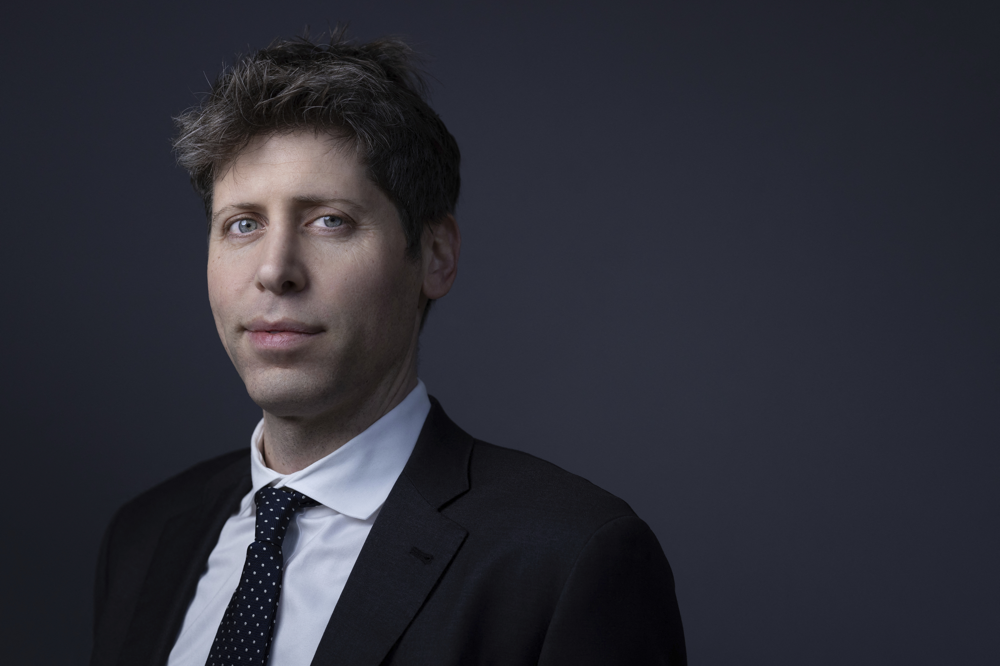

Sam Altman nació en 1985 y creció en San Luis, Misuri, donde desarrolló un interés temprano por la informática tras recibir su primera computadora a los ocho años. Estudió computación en la Universidad de Stanford, pero abandonó la carrera en 2005 para fundar Loopt, una de las primeras aplicaciones de redes sociales con geolocalización. Aunque Loopt no alcanzó un éxito comercial masivo, su venta en 2012 le proporcionó el capital y la reputación necesarios para integrarse plenamente en el ecosistema de inversión de Silicon Valley. Su ascenso definitivo ocurrió en Y Combinator, la aceleradora de startups más influyente del mundo, donde pasó de ser un emprendedor financiado a convertirse en su presidente en 2014. Durante su gestión, expandió drásticamente la escala de la organización, supervisando el crecimiento de empresas que hoy son pilares tecnológicos como Stripe, Airbnb y Dropbox. Esta etapa consolidó su visión sobre el crecimiento exponencial y su capacidad para gestionar proyectos de escala global.

En 2015, motivado por la preocupación sobre los riesgos existenciales de la tecnología, cofundó OpenAI como una organización sin fines de lucro destinada a desarrollar una inteligencia artificial general segura. Bajo su dirección como CEO desde 2019, la empresa dio un giro estratégico hacia un modelo de beneficios limitados para atraer las inversiones masivas de Microsoft, lo que permitió el lanzamiento de ChatGPT y el inicio de la actual carrera armamentista de la IA. A pesar de una breve crisis de gobernanza en 2023, donde fue destituido y rápidamente reinstalado por presión de empleados e inversores, Altman se mantiene hoy como la figura central en la regulación y el despliegue de modelos de inteligencia artificial avanzados, complementando su perfil con inversiones masivas en energía de fusión nuclear y biotecnología.